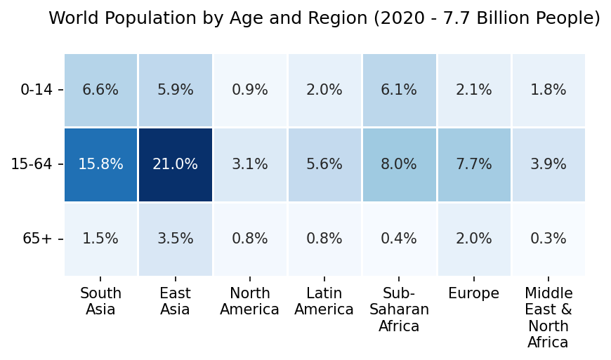

What would a hundred people randomly selected from around the world look like?
This page shows you a possible answer, using AI-generated images. The population sample is drawn according to World Bank statistics below. Each time you refresh, the sample is different.
The images were generated using StableDiffusion on Replicate with prompts like "profile headshot photo of a male latin american adult, centered, white bg".
By Sergey Karayev. Code on GitHub.